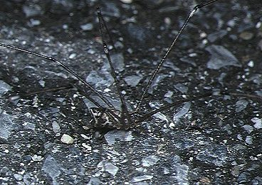

टेल्ड सेलर मकड़ीTailed Cellar Spider
Crossopriza lyoni · Pholcidae · SPD-0026

- Scientific name वैज्ञानिक नाम
- Crossopriza lyoni (Blackwall, 1846)
- Family कुल
- Pholcidae
- Hindi हिंदी
- टेल्ड सेलर मकड़ी
- Local names स्थानीय नाम
- tailed cellar spider, spider
- Status here यहाँ की स्थिति
- native
- Movement आवागमन
- Resident, here all year
- Known from कहाँ दर्ज
- Others have published records from the wider Awadh–Purvanchal plain, none yet from Basti–Ayodhya अवध–पूर्वांचल से दूसरों के प्रकाशित अभिलेख, बस्ती–अयोध्या से अभी नहीं
- IUCN IUCN
- not evaluated
- Review समीक्षा
- audited and independently read
When to look कब देखें
Present all year. साल भर मौजूद।
Tell it apart from इनसे अलग पहचानें
टेल्ड सेलर मकड़ी / Tailed Cellar Spider
Crossopriza lyoni (Blackwall, 1846) — Pholcidae
टेल्ड सेलर मकड़ी — भारत के हर घर के अंधेरे कोने में, छत के कोनों में, बाथरूम की दीवारों पर और तहखानों में रहने वाली एक बहुत ही बारीक, हल्की-फुल्की मकड़ी। पतली, लंबी टाँगें, पारदर्शी शरीर, और अपना अनोखा फनल जैसा जाला। घर की मक्खियों, मच्छरों और छोटी कीटों का शिकार करती है। पालतू घरेलू कीट-नियंत्रण कार्यकर्ता।
Quick Identification त्वरित पहचान
| Feature | Description |
|---|---|
| Size | 6–8 mm body length; legspan 25–30 mm (very slender appearance) |
| Legs | Extremely long, thin, fragile-looking; 8–10 times body length |
| Body | Pale yellow, tan, or brownish; nearly transparent |
| Eyes | Eight, arranged in two groups of four |
| Web | Loose, irregular mesh (funnel-web) in corners; sticky and three-dimensional |
| Behaviour | Sits in web hub during day; active hunting at night |
Field tip: Impossibly long, thin legs relative to body size — no other common house spider looks so spindly. Often mistaken for a "daddy longlegs" harvestman, but with true eight eyes and spider body plan. Trembles web when disturbed (defensive behaviour).
Morphology आकारिकी
| Feature | Measurement |
|---|---|
| Cephalothorax length | 2.5–3.5 mm |
| Abdomen length | 3–4 mm |
| Leg I length | 20–30 mm |
| Total body length | 6–8 mm |
| Legspan | 25–30 mm |
Body: Cephalothorax pale yellow to tan; abdomen pale, nearly transparent. Prosoma without distinct markings. The exoskeleton is delicate and flexible.
Legs: The hallmark of Pholcidae — extremely long, thin legs with fine setae. Proportions give the spider a distinctive fragile appearance. Leg I (front pair) longest; posterior pairs progressively shorter.
Eyes: Anterior lateral eyes larger; posterior eyes smaller; arranged in two compact groups on the prosoma.
Fangs (chelicerae): Small, not prominently toothed.
Ecological Role पारिस्थितिक भूमिका
Household predator: Feeds on house flies, mosquitoes, small moths, gnats, tiny ants, and other small arthropods caught in its web. A single spider may consume several small insects per week.
Web predator — indirect competitor: Occasionally predates other spiders caught in its web, including small Salticidae and Theridiidae. Sometimes cannibalizes conspecifics (same-species hunting).
Nocturnal hunter: More active at night when it vibrates its web to detect prey, though web remains sticky 24 hours.
Beneficial synanthrope: Thrives in human buildings and significantly reduces household flying insect problems in dark, damp spaces.
Life Cycle / Phenology जीवन चक्र
| Event | Timing |
|---|---|
| Mating | Year-round in buildings |
| Egg sac deposition | Multiple times per year |
| Incubation | 2–3 weeks at room temperature |
| Spiderling emergence | Continuous through warm months |
| Maturity | 2–3 months |
| Lifespan | 1–2 years |
Indeterminate breeding season in climate-controlled indoor spaces. Females guard egg sacs; eggs hatch and spiderlings disperse within the building.
Agricultural / Human Relevance कृषि प्रासंगिकता
Household pest control — free and effective: Crossopriza lyoni is one of the most effective indoor pest controllers. House flies, which transmit disease, and mosquitoes are primary prey. In dengue-endemic regions, the presence of this spider on ceilings can meaningfully reduce indoor mosquito populations.
Cultural attitudes — mixed: Many people find the visible webs unsightly and sweep them away. Some cultures regard the presence of this spider positively — in some traditions, web patterns are believed to indicate good luck or cleanliness.
Medical significance: Completely harmless to humans. Fangs too small to penetrate skin. No venom capable of affecting humans. Bites do not occur in normal handling.
Not a pest: Does not damage stored food, textiles, or structures. Webs are easily cleaned if desired.
Expected Locally स्थानीय रूप से अपेक्षित
Not a field record. Written from published accounts for eastern Uttar Pradesh. No confirmed local sighting yet — if you have seen it, that is what the atlas needs.
अभी तक स्थानीय पुष्टि नहीं। यह विवरण प्रकाशित स्रोतों से है, किसी अवलोकन से नहीं।
Crossopriza lyoni is expected year-round in older village houses, grain stores, and buildings with dark corners and high humidity. Webs are constructed in ceiling corners, inside cupboards, under storage racks, and in bathroom shadows. The presence of visible webs indicates active predation of household flying insects. Easily observed in evening hours when spider is more active.
Distribution वितरण
Global range: Cosmopolitan — found worldwide in human buildings, particularly in temperate and tropical regions.
In India: Ubiquitous in all populated areas with buildings; both urban and rural settlements.
In Uttar Pradesh: Expected in all towns, villages, and buildings with dark, humid spaces.
In Basti district / eastern UP: Resident year-round in buildings; abundance proportional to building density and humidity.
Research Questions शोध प्रश्न
- How many house flies can a single Crossopriza web capture in one week? — Monitor a web daily.
- क्या बाथरूम की नमी और तापमान टेल्ड सेलर मकड़ी की आबादी को प्रभावित करते हैं? (Does bathroom humidity and temperature affect cellar spider populations?)
- Do indoor populations have a seasonal activity peak, or are they active year-round?
- How quickly do spiderlings develop from egg sac to adult in a kitchen (warm) vs. cellar (cool)?
- Can the presence of Crossopriza webs meaningfully reduce indoor mosquito numbers over one season?
Similar Species मिलती-जुलती प्रजातियाँ
| Spider | Distinction | |
|---|---|---|
| Pholcus phalangioides (Common Cellar Spider) | Slightly larger (8–10 mm); leg proportions similar; similar ecology; overlapping range | |
| [[cellar_spider | Cellar Spider]] — true Pholcus | Closely related; nearly identical ecology |
| Harvestman (Opiliones) — "Daddy Longlegs" | NOT a spider — has only 2 eyes (vs 8); lacks venom; chelicerae structure different; different body proportions |
Field rule: Eight-eyed, extremely fragile-legged spider in a fuzzy web in a building corner, trembling when web is disturbed, = Crossopriza lyoni.
Taxonomy & Classification वर्गीकरण
Original description. Originally described as Pholcus lyoni Blackwall, 1846 in A Catalogue of the Spiders of Great Britain and Ireland. Transferred to genus Crossopriza Strand, 1935 based on cheliceral morphology. Type locality: Great Britain.
Subspecies. Monotypic.
Family and order placement. Order Araneae, family Pholcidae (cellar spiders or daddy longlegs spiders). Family Pholcidae contains about 2,000 species, characterized by small body size, long delicate legs, and unique eye arrangement.
Phylogenetic notes: Pholcidae is basal within araneomorphs; molecular evidence suggests an Old World origin in tropical regions, with later dispersal to buildings following human settlement patterns.
IUCN status rationale. Not assessed. As a highly synanthropic species thriving in human buildings, population is stable globally.
Photo Gallery फोटो गैलरी
No photos yet — add field photos to media/species/tailed_cellar_spider/ and run node scripts/sync_photos.js.
Photos wanted:
- Spider in web corner with legs clearly visible
- Close-up showing long, thin legs relative to body
- Web structure in bathroom or kitchen
- Size comparison (with other household spiders)
References संदर्भ
- Blackwall, J. (1846). A Catalogue of the Spiders of Great Britain and Ireland. Ray Society, London.
- Strand, E. (1935). Phalangida, Acari und Araneida. In Brohmer et al., Fauna von Deutschland, 5. Auflage.
- Nentwig, W., Blick, T., Bosmans, R., et al. (2024). Spiders of Europe. www.wsc.nmbe.ch.
- Tikader, B.K. & Biswas, B. (1981). Spider fauna of India. Zoological Survey of India, Calcutta.
- Foelix, R.F. (2011). Biology of Spiders (3rd ed.). Oxford University Press.
- GBIF Occurrence Data — Crossopriza lyoni, worldwide (1900–2024). GBIF taxon key: [to be filled by script].
Source file: species/fauna/spiders/tailed_cellar_spider.md